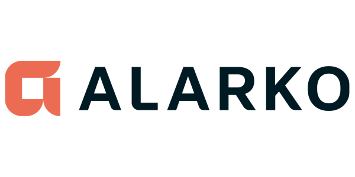
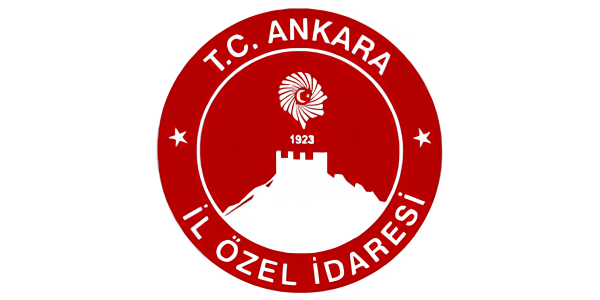
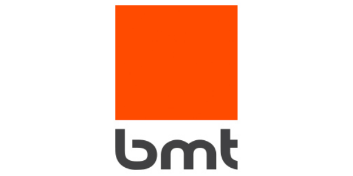
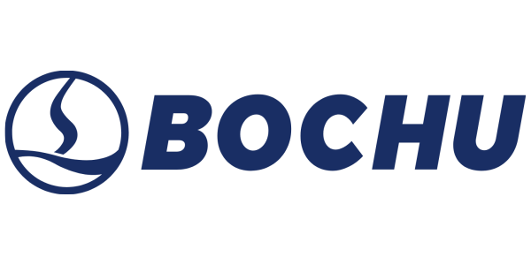
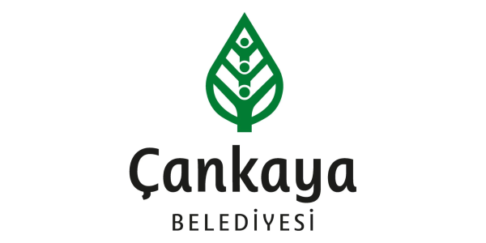
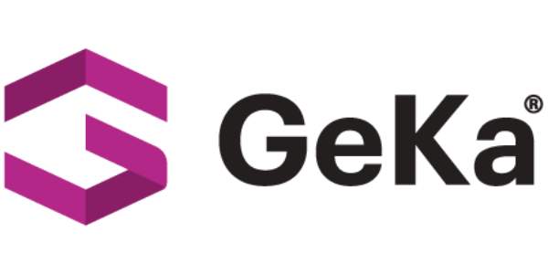
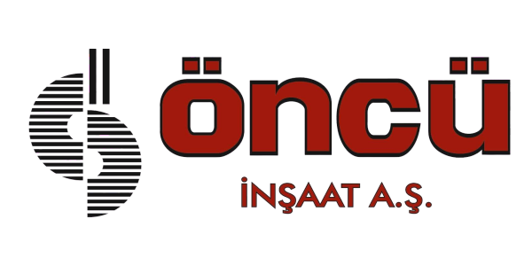
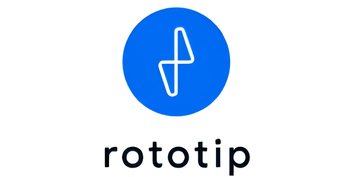

Teknik Değerlendirme
Gelen teknik çizim veya proje talebi, malzeme uygunluğu, üretim yöntemi ve kapasite açısından değerlendirilir. Bu adım teklif sürecinin temelini oluşturur.
Foramak Makine; metal işleme ve makine imalat süreçlerinde teknik çizime dayalı, ölçülü ve güvenilir üretim anlayışıyla Ankara / İvedik OSB'den hizmet verir.
Foramak Makine, metal işleme ve makine imalat süreçlerinde teknik çizime dayalı, ölçülü ve güvenilir üretim anlayışıyla hizmet verir. Sac, boru ve profil gruplarında lazer kesimden kaynaklı imalata kadar farklı üretim adımlarını proje ihtiyaçlarına göre planlar.
Ankara / İvedik OSB'de faaliyet gösteren Foramak Makine, sanayiye yönelik parça, kesim, büküm, kaynak ve özel imalat çözümleri üretmektedir. Müşteri taleplerine göre DXF, DWG ve PDF çizimleri değerlendirerek üretim sürecini başlatır.
Firma olarak önceliğimiz; teknik gerekliliklere uygun üretim, termin süreçlerinin planlanması ve uzun vadeli iş ilişkisi oluşturmaktır. Her proje, malzeme ve yöntem açısından ayrı değerlendirilir; teklife dahil edilen bilgiler net ve doğrulanabilir şekilde aktarılır.
Her proje başlangıçta teknik gereksinim ve malzeme bilgileriyle değerlendirilir. Üretim yöntemi projeye özel belirlenir.
Gelen teknik çizim veya proje talebi, malzeme uygunluğu, üretim yöntemi ve kapasite açısından değerlendirilir. Bu adım teklif sürecinin temelini oluşturur.
Teklif onayından sonra kesim, büküm, kaynak veya özel işlem adımları projeye göre sıralanır. Termin süresi üretim kapsamına göre planlanır.
Üretilen parçalar kontrol süreçlerinden geçirildikten sonra teslimata hazır hale getirilir. İlk projeden itibaren tutarlı süreç yönetimi esas alınır.
Foramak Makine, Ankara'nın önemli organize sanayi bölgelerinden İvedik OSB'de faaliyet göstermektedir. Sanayi bölgesindeki konumu, lojistik erişim ve üretim devamlılığı açısından avantaj sağlamaktadır.
Ankara ve çevresiyle birlikte farklı bölgelerden teknik çizim ve proje taleplerine yanıt verilmektedir.
Üretim disiplini, teknik süreç yönetimi ve güvene dayalı iş birlikleriyle farklı kurum ve sektörlerde çözüm ortağı olarak yer alıyoruz.








Malzeme, ölçü ve teknik çizim bilgilerinizi paylaşın; üretim kapsamı ve teklif süreci için dönüş sağlayalım.